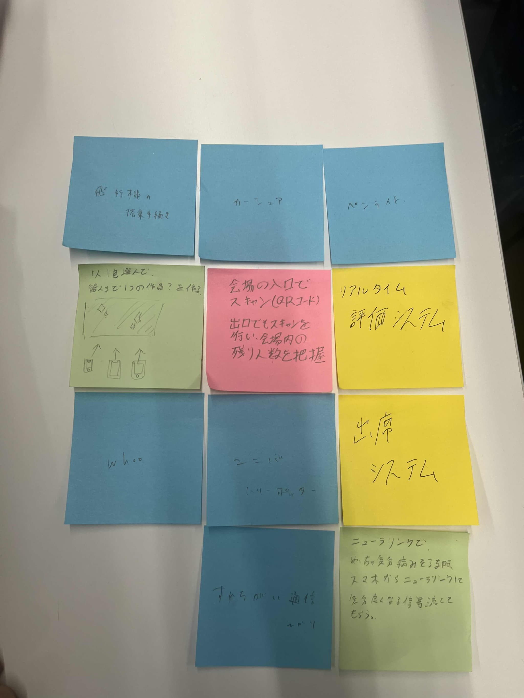

第二回 IoTの体験
＜IoTとは＞
・IoTは物理的なデバイスがインターネットを通じて通信し、データをやり取りする技術です。
例えば、スマートホームでは家電製品がリモートで制御可能。産業では農業や工場でセンサーを使い、効率的な監視や操作が可能。IoTの利点は効率性や生産性の向上、新たなビジネスモデルの創造などだが、セキュリティ上の懸念もあると言われている。
＜実践と記録＞
＜IoTで何が出来そうか＞
・グループからの案では、実際にモノからインターネットを通じてアクションを起こすアイデアがいくつか出た。

＜IoTを活かしたアイデア＞
実際に先ほどのアイデアを軸にQRコードを用いた人数把握を考えた。会場の入り口、出口にＱＲコードを設置。スマートフォンでそれらを入場と退場の際にスキャンし、
会場内の残り人数を把握。会場内の人数を把握することで、閉鎖するときに取り残されることがないようにできる。また、来場者がどのタイミングで入場、退場したかのデータもとれる。